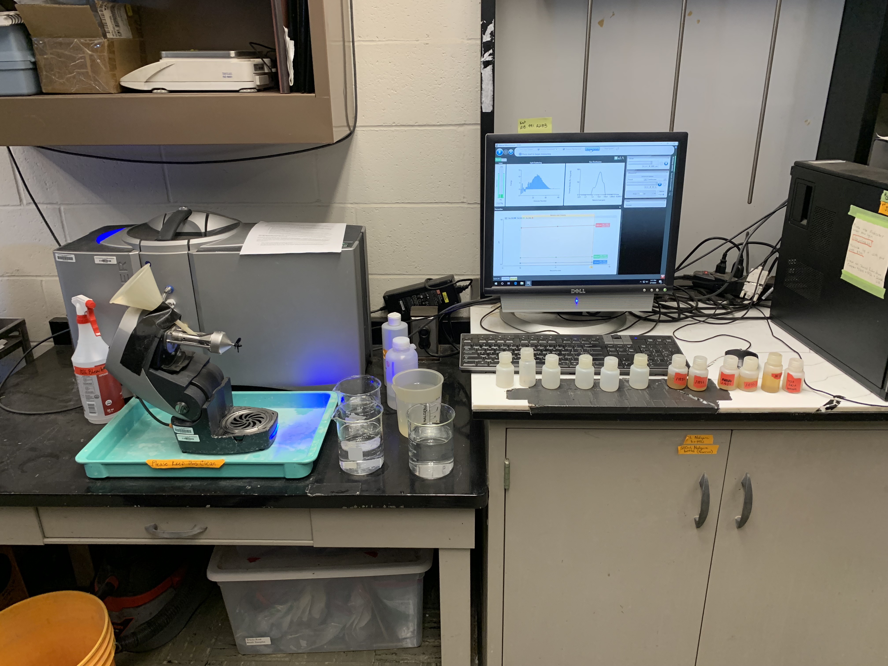

11 Laser Particle Size Analysis
Last edited: 08NOV2023 NP
Laser Particle Size Analyzers (LPSA) estimate particle size distributions by volume of sample instead of by mass (traditional sedimentation and sieving methods estimate particle size distributions by mass). For this reason, knowing the absolute mass of the prepared sample is not as important as in traditional methods. However, the mass of prepared sample does influence how much the sample obscures transmitted laser light, so in general, samples should be of similar mass (note that the amount of organic matter or general color of the sample will influence this as well, but mass can be controlled).
This protocol is written for use with a Malvern Mastersizer 300 particle size analyzer. Serial number: 1119007.
11.1 Materials
- Air dried soil samples, sieved to 2mm
- Pinch measuring scoop
- 30mL Nalgenes with lids
- Labeling tape, sharpie
- 5% SHMP (50g SHMP / 1L H2O)
- Bleach (NOT low-splash)
- Deionized (DI) water
- Adjustable-volume pipette
- Shaker
- 4 beakers
- Squeeze rinse bottle
- Particle size analyzer with blender attached
- Optional: 5 gallon bucket
11.2 Sample Preparation Procedure
11.2.0.1 General Principles
At all steps of sample preparation and sample measurement, utmost care must be taken to avoid fractionation. This means that the best possible representative subsamples must be taken from the sample bags, and once the subsample is being prepared, none should be lost: - The entire subsample should be transferred into the preparation container (we have currently been using 30 mL Nalgenes) - No liquid should be lost from the preparation container (it is likely that this liquid would contain fine clays at the very least, which could fractionate the sample - The entire contents of the preparation container (liquid and all particles) should be transferred into the measurement beaker through thorough washing with dissolved water. - No water should be allowed to overflow from the measurement beaker. If any of the above are suspected to occur, the sample may be fractionated. In severe cases, the results should be considered invalid. In uncertain cases, notes should be made in the sample logbook or in the sample entry itself so that if results are significantly different than other subsamples the underlying reason can be backtraced.
11.2.0.2 Procedure
- Quantitatively (i.e. don’t lose any sample) transfer a representative subsample of ~ 0.48 – 0.52 grams into a 30 mL Nalgene container. Note: it is more important here to get a representative subsample than an exact mass (i.e. don’t take a little material out or put a little more material in just to make the mass – take one representative scoop and go with it unless it is far outside of the target range).
- We have been using the pinch scoop with red tape on the handle to achieve a representative sample.
- Consider shaking or turning the container the sample is in prior to removing your subsample, as heavier particles may have settled to the bottom.
- Prepare 3 independent subsamples as described in step 1 for each soil sample that will be run. Label the bottles with the sample name, and subsample # (i.e. 1-3).
- Alternatively, prepare 1 bottle of each sample and a duplicate of every 10 samples. Make note if there are any sampling errors and create a second replication as needed. Before doing this, ensure that it is sufficient for the project.
- Transfer 5 ml of 5% (50g/L) SHMP into the container using a pipette. Transfer 5 mL of bleach into the container; if soil is an O horizon you may put in more bleach. Fill to ~ 20 ml total volume with DI water (this does not need to be quantitative, just ~ 2/3 full – the key is that there is enough room left in the bottle for adequate movement when on the shaker).
- Do not use low-splash bleach (see photo).
- Place on shaker at around 30,000 rpm for 12-24 hours (more is okay if necessary but should be relatively consistent time).
11.2.0.3 Other Potential Pretreatments
Pretreatments under development include: - Organic matter removal (addition of ~ 2 + ml of 30% H2O2 after shaking/dispersion). - Carbonate removal (addition of ~ 2 + ml of 2M HCl after shaking/dispersion). - Just practiced adding HCL before bleach and shaking. Let effervesce overnight and then SLOWLY put in bleach and shake. Add slowly because it can overflow if the HCl hasn’t reacted fully. - Water-dispersible clay only: In this treatment, no SHMP is added. DI water is the only thing used as dispersant. This is an estimate of aggregate stability and the behavior of soil aggregates – but do note that these soils have already been hand pulverized. - Iron oxide removal
11.3 Particle Size Analysis Procedure
- Startup sequence: It is critical that these steps are followed exactly to allow the software to run as quickly and efficiently as possible.
Turn on computer.
Turn on LPSA.
Wait at least 20-30 minutes.
Open Malvern Software
- During the 20-30 minutes that the LPA is warming up, ensure your samples are grouped by names and organized by numbers. Example, under group Waseca: samples 1, 2, 3, …n. Also, obtain four 600 mL beakers.

Start the computer and click on “MASTERSIZER 3000” icon on the screen.
Open the “MANUAL MEASUREMENT” located at the top of the computer screen and wait for the “NEW MEASUREMENT” file to open
If the “MANUAL MEASUREMENT” button is grayed out, unplug and replug the USB marked with red on the computer tower.
You should see three green bars at the bottom of the window: Extended Software, Can 1: Hydro EV, and Mastersizer 3000. This means the Mastersizer, blender, and computer are communicating. See photo below.
- Under the file name, write the date the experiment is being performed and your initials, eg 23JUN2015_JBL.
- Fill the 1000 mL beaker with DI water up to the 800 mL mark and place it in the wet dispensing unit (Hydro SV).
- Under the “Sample Identification” in your screen, write the name of the soil sample to be experimented followed by the bottle number and your initials. Example: C-UFS-2-P-#1_JBL. Click ‘OK’.

- Click on the “INITIALISE INSTRUMENT” that is highlighted on the screen and allow the system to run for about 5 seconds.
- Click on the “MEASURE SAMPLE” to begin measurement of the sample. The system should automatically record three measurements and stop.
- Below is an example of what a “good” reading would look like. All three lines are relatively straight. If one (the red line, usually) looks like a large mountain or deep valley, make note of that in your spreadsheet and potentially rescan it.
- Remove the beaker from the unit and dump it in the drain. Rinse the beaker and fill it with DI water.
- Fill one 500 mL beaker with DI water up to the 400 mL mark and place it in the unit and allow it to run for about 30 seconds to clean the LPSA. Repeat the procedure 3 times and as needed to ensure that all the soil particles in the system are completely out. Note that coarse sand particles will tend to get trapped in the sample lines and may take a long time to remove. Watch for this especially on very coarse samples.
- Exit the file and this completes the first measurement for the sample #1.
- Place the 1000 mL beaker with the DI water and click on the “INITIALIZE INSTRUMENT” and follow the steps for the second measurement. Repeat until all samples are finished.
While running samples, when closing out the measurement window, the computer will sometimes think you clicked twice and ask if you want to close the Malvern software altogether - “do you want to save the changes to measurement file xxx?” Click cancel to avoid closing the software and potentially losing your data.
11.3.0.1 Cleaning the LPSA
After you are finished using the laser particle size analyzer, it is important to remove any residual particles from the tubes/machine. Sand particles are most often the ones that get stuck. - After the last sample, rinse the LPSA 3 times with DI water, just as has been done with the previous samples. - Fill one 500 mL beaker with DI water and add 1-2 squirts of soap mix from the bottle labeled “Dilute Soap Water.” Rinse the LPSA with this solution. - Fill one 500 mL beaker with DI water up to the 400 mL mark; rinse the LPSA with this solution. - Leave the unit/blender head up when finished.
We recommend dumping at least the first rinse between each sample into a 5 gallon bucket next to the Mastersizer, rather than filling up the sink’s catch bucket quickly. Dump the 5 gallon bucket into a toilet when you are finished.
To clean the 30 mL Nalgenes, rinse them (lids and bottles) out very well - I use the S434 sink, but the dishwashing sink also works - and set them upside down to dry on a tray with a paper towel below.
11.3.0.2 Exporting data from the LPSA/Computer
- Under the “Home” menu on the top of the screen in the Malvern Software, choose “Export selected records” or “Export all records.”
- To select only certain records to export, hold the “control” key on the keyboard and select each record you wish to export. Once each record you want to export is highlighted in blue, select “Export selected records.”
- Once the “Export Data” window opens, you will be able to change the formatting of your exported file.
- Ordering: can choose between rows or columns.
- Delimiter: this changes what separates each cell or piece of data. You can choose between comma or tab delimited.
- Formatting: can choose between formatting the data as it’s displayed in the software which displays numeric information to a limited number of decimal places (this may be preferable for presentation purposes); or choose unformatted values to show all data as recorded by the system. For most uses of the Mastersizer, choose unformatted values.
- Header: can choose between “header on” and “header off”. “Header on” keeps headings like “Record Number” and “Sample Name.” For most uses of the Mastersizer, leave the header on. Once the settings are correct, select “Export to file” at the bottom of the window. You can choose between Text files (.txt), CSV files (comma separated values; .csv), or All files (.). For most uses of the LPSA, select “CSV files.”
- Save the file to the desktop.
11.3.0.3 Shutdown Sequence for the LPSA/Computer
It is critical that these steps are followed exactly to allow the software to run as quickly and efficiently as possible.
Close Malvern Software.
Turn off LPSA.
Log off computer or set it to sleep.
11.4 Troubleshooting
- “Error in initializing instrument”: error first happened on 16MAY2023. All 3 green bars are lit up, beaker is under blender, blender head is down, click initialize instrument, and it reads an error message. “A problem has occurred during initialisation. Press reset to…” Some solutions:
- Try pressing it again. It sometimes works the second time
- If that doesn’t work, wait 5 minutes and try again
- Close the measurement window, save your measurement file, and close the Malvern software. Reopen the same measurement file and try rerunning it
- If none of those work, the only solution is to follow the shutdown procedure above, wait 15-20 minutes, and restart it
- Malvern also gave the following two notifications (see photo), 1) Unable to communicate with instrument; 2) The laser power is low.
11.5 LPSA CONSIDERATIONS
Note that there are many other important factors and considerations when utilizing the LPSA. This document does not cover data analysis but will very soon. PLEASE, PLEASE ASK NIC IF YOU HAVE ANY QUESTIONS!
Notes about windows/scratching.
Notes about cleaning windows.
Notes about blank energy levels.
Notes about running standards.
Notes about data analysis.
Notes about LPSA theory and mechanics.
Parameters for measurement.